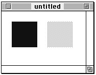
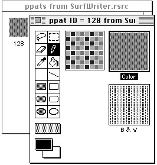
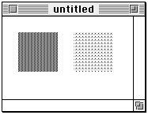
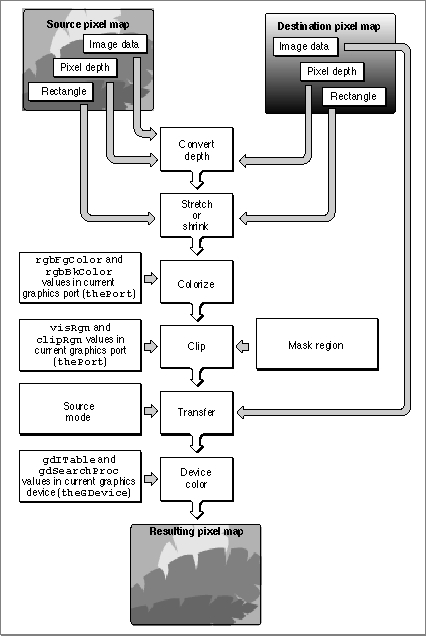
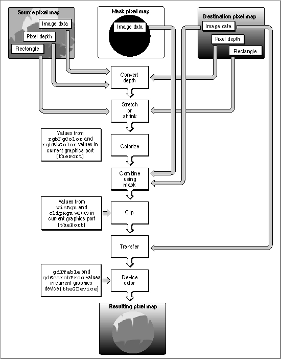
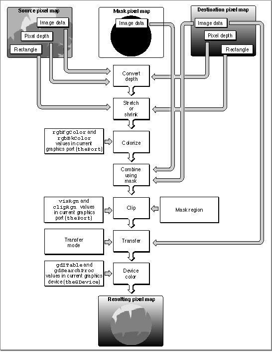
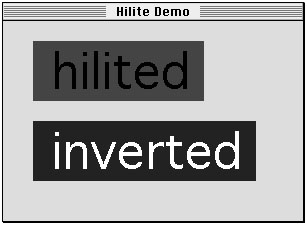

Legacy Document
Important: The information in this document is obsolete and should not be used for new development.
Important: The information in this document is obsolete and should not be used for new development.


Using Color QuickDraw
To use Color QuickDraw, you generally
This section gives an overview of routines that your application typically calls while using Color QuickDraw. Before calling these routines, however, your application should test for the existence of Color QuickDraw by using the
- initialize QuickDraw
- create a color window into which your application can draw
- create
RGBColorrecords to define your own foreground and background colors- create pixel pattern (
'ppat') resources to define your own colored patterns- use these colors and pixel patterns for drawing with the graphics pen, for filling as the background pattern, and for filling into shapes
- use the basic QuickDraw routines previously described in this book to perform all other onscreen graphics port manipulations and calculations
Gestaltfunction with thegestaltQuickDrawVersionselector. TheGestaltfunction returns a 4-byte value in itsresponseparameter; the low-order word contains QuickDraw version data. In that low-order word, the high-order byte gives the major revision number and the low-order byte gives the minor revision number. If the value returned in theresponseparameter is equal to the value of the constantgestalt32BitQD13, then the system supports the System 7 version of Color QuickDraw. Listed here are the various constants, and the values they represent, that indicate earlier versions of Color QuickDraw.
CONST gestalt8BitQD = $100; {8-bit Color QD} gestalt32BitQD = $200; {32-bit Color QD} gestalt32BitQD11 = $210; {32-bit Color QDv1.1} gestalt32BitQD12 = $220; {32-bit Color QDv1.2} gestalt32BitQD13 = $230; {System 7: 32-bit Color QDv1.3}Your application can also use theGestaltfunction with the selectorgestaltQuickDrawFeaturesto determine whether the user's system supports various Color QuickDraw features. If the bits indicated by the following constants are set in theresponseparameter, then the features are available:
CONST gestaltHasColor = 0; {Color QuickDraw is present} gestaltHasDeepGWorlds = 1; {GWorlds deeper than 1 bit} gestaltHasDirectPixMaps = 2; {PixMaps can be direct--16 or } { 32 bit} gestaltHasGrayishTextOr = 3; {supports text mode } { grayishTextOr}When testing for the existence of Color QuickDraw, your application should test the response to thegestaltQuickDrawVersionselector (rather than test for the resultgestaltHasColor, which is unreliable, from thegestaltQuickDrawFeaturesselector). The support for offscreen graphics worlds indicated by thegestaltHasDeepGWorldsresponse to thegestaltQuickDrawVersionselector is described in the chapter "Offscreen Graphics Worlds." The support for the text mode indicated by thegestaltHasGrayishTextOrresponse is described in the chapter "QuickDraw Text" in Inside Macintosh: Text. For more information about theGestaltfunction, see the chapter "Gestalt Manager" in Inside Macintosh: Operating System Utilities.Initializing Color QuickDraw
To initialize Color QuickDraw, use theInitGrafprocedure, described in the chapter "Basic QuickDraw." Besides initializing basic QuickDraw, this procedure initializes Color QuickDraw on computers that support it.In addition to
InitGraf, all other basic QuickDraw routines work with Color QuickDraw. For example, you can use theGetPortprocedure to save the current color graphics port, and you can use theCopyBitsprocedure to copy an image between two different color graphics ports. See the chapters "Basic QuickDraw" and "QuickDraw Drawing" for descriptions of additional routines that you can use with Color QuickDraw.Creating Color Graphics Ports
All graphics operations are performed in graphics ports. Before a color graphics port can be used, it must be allocated with theOpenCPortprocedure and initialized with theInitCPortprocedure. Normally, your application does not call these procedures directly. Instead, your application creates a color graphics port by using theGetNewCWindoworNewCWindowfunction (described in the chapter "Window Manager" in Inside Macintosh: Macintosh Toolbox Essentials) or theNewGWorldfunction (described in the chapter "Offscreen Graphics Worlds" in this book). These functions automatically callOpenCPort, which in turn callsInitCPort.Listing 4-1 shows a simplified application-defined procedure called
DoNewthat uses the Window Manager functionGetNewCWindowto create a color graphics port.Listing 4-1 Using the Window Manager to create a color graphics port
PROCEDURE DoNew (VAR window: WindowPtr); VAR windStorage: Ptr; {memory for window record} BEGIN window := NIL; {allocate memory for window record from previously allocated block} windStorage := MyPtrAllocationProc; IF windStorage <> NIL THEN {memory allocation succeeded} BEGIN IF gColorQDAvailable THEN {use Gestalt to determine color availability} window := GetNewCWindow(rDocWindow, windStorage, WindowPtr(-1)) ELSE {create a basic graphics port for a black-and-white screen} window := GetNewWindow(rDocWindow, windStorage, WindowPtr(-1)); END; IF (window <> NIL) THEN SetPort(window); END;You can useGetNewCWindowto create color graphics ports whether or not a color monitor is currently installed. So that most of your window-handling code can handle color windows and black-and-white windows identically,GetNewCWindowreturns a pointer of typeWindowPtr(not of typeCWindowPtr).A window pointer points to a window record (
WindowRecord), which contains aGrafPortrecord. If you need to check the fields of the color graphics port associated with a window, you can coerce the pointer to theGrafPortrecord into a pointer to aCGrafPortrecord.You can allow
GetNewCWindowto allocate the memory for your window record and its associated basic graphics port. You can maintain more control over memory use, however, by allocating the memory yourself from a block allocated for such purposes during your own initialization routine, and then passing the pointer toGetNewWindow, as shown in Listing 4-1.To dispose of a color graphics port when you are finished using a color window, you normally use the
DisposeWindowprocedure (if you let the Window Manager allocate memory for the window) or theCloseWindowprocedure (if you allocated memory for the window). If you use theCloseWindowprocedure, you also dispose of the window record containing the graphics port by calling the Memory Manager procedureDisposePtr. You use theDisposeGWorldprocedure when you are finished with a color graphics port for an offscreen graphics world.Drawing With Different Foreground Colors
You can set the foreground and background colors using either Color QuickDraw or Palette Manager routines. If your application uses the Palette Manager, it should set the foreground and background colors with thePmForeColorandPmBackColorroutines, as described in the chapter "Palette Manager" in Inside Macintosh: Advanced Color Imaging. Otherwise, your application can use theRGBForeColorprocedure to set the foreground color, and it can use theRGBBackColorprocedure to set the background color. Both of these Color QuickDraw procedures also operate for basic graphics ports created in System 7. (To set the foreground and background colors for basic graphics ports on older versions of system software, use theForeColorandBackColorprocedures described in the chapter "QuickDraw Drawing.")The
RGBForeColorprocedure lets you set the foreground color to the best color available on the current graphics device. This changes the color of the "ink" used for drawing. All of the line-drawing, framing, and painting routines described in the chapter "QuickDraw Drawing" (such asLineTo,FrameRect, andPaintPoly) draw with the foreground color that you specify withRGBForeColor.
To specify a foreground color, create an
- Note
- Because a pixel pattern already contains color, Color QuickDraw ignores the foreground and background colors when your application draws with a pixel pattern. As described in "Drawing With Pixel Patterns" beginning on page 4-19, you can draw with a pixel pattern by using the
PenPixPatprocedure to assign a pixel pattern to the graphics pen, by using theBackPixPatprocedure to assign a pixel pattern as the background pattern for the current color graphics port, and by using theFillCRect,FillCOval,FillCRoundRect,FillCArc,FillCRgn, andFillCPolyprocedures to fill shapes with a pixel pattern.
RGBColorrecord. Listing 4-2 defines twoRGBColorrecords. The first is declared asmyDarkBlue, and it's defined with a medium-intensive blue component and with zero-intensity red and green components. The second is declared asmyMediumGreen, and it's defined with an intensive green component, a mildly intensive red component, and a very slight blue component.Listing 4-2 Changing the foreground color
PROCEDURE MyPaintAndFillColorRects; VAR firstRect, secondRect: Rect; myDarkBlue: RGBColor; myMediumGreen: RGBColor; BEGIN {create dark blue color} myDarkBlue.red := $0000; myDarkBlue.green := $0000; myDarkBlue.blue := $9999; {create medium green color} myMediumGreen.red := $3206; myMediumGreen.green := $9038; myMediumGreen.blue := $013D; RGBForeColor(myDarkBlue); {draw with dark blue pen} PenMode(patCopy); SetRect(firstRect, 20, 20, 70, 70); PaintRect(firstRect); {paint a dark blue rectangle} RGBForeColor(myMediumGreen); {draw with a medium green pen} SetRect(secondRect, 90, 20, 140, 70); FillRect(secondRect, ltGray); {paint a medium green rectangle} END;In Listing 4-2, theRGBColorrecordmyDarkBlueis supplied to theRGBForeColorprocedure. TheRGBForeColorprocedure supplies thergbFgColorfield of theCGrafPortrecord with thisRGBColorrecord, and it places the closest-matching available color in thefgColorfield; the color in thefgColorfield is the color actually used as the foreground color.After using
SetRectto create a rectangle, Listing 4-2 callsPaintRectto paint the rectangle. By default, the foreground color is black; by changing the foreground color to dark blue, every pixel that would normally be painted in black is instead painted in dark blue.Listing 4-2 then changes the foreground color again to the medium green specified in the
RGBColorrecordmyMediumGreen. After creating another rectangle, this listing callsFillRectto fill the rectangle with the bit pattern specified by the global variableltGray. As explained in the chapter "QuickDraw Drawing," this bit pattern consists of widely spaced black pixels that create the effect of gray on black-and-white screens. However, by changing the foreground color, every pixel in the pattern that would normally be painted black is instead drawn in medium green.The effects of Listing 4-2 are illustrated in the grayscale screen capture shown in
Figure 4-9.Figure 4-9 Drawing with two different foreground colors (on a grayscale screen)

If you wish to draw with a color other than the foreground color, you can use thePenPixPatprocedure to give the graphics pen a colored pixel pattern that you define, and you can use theFillCRect,FillCRoundRect,FillCOval,FillCArc,FillCPoly, andFillCRgnprocedures to fill shapes with colored patterns. The use of these procedures is illustrated in the next section.Drawing With Pixel Patterns
Using pixel pattern resources, you can create multicolored patterns for the pen pattern, for the background pattern, and for fill patterns.To set the pixel pattern to be used by the graphics pen in the current color graphics port, you use the
PenPixPatprocedure. To assign a pixel pattern as the background pattern, you use theBackPixPatprocedure; this causes theScrollRectprocedure and the shape-erasing procedures (for example,EraseRect) to fill the background with your pixel pattern. To fill shapes with a pixel pattern, you use theFillCRect,FillCRoundRect,FillCOval,FillCArc,FillCPoly, andFillCRgnprocedures.
When you use the
- Note
- Because a pixel pattern already contains color, Color QuickDraw ignores the foreground and background colors when your application uses these routines to draw with a pixel pattern. Color QuickDraw also ignores the pen mode by drawing the pixel pattern directly onto the pixel image.
PenPatorBackPatprocedure in a color graphics port, Color QuickDraw constructs a pixel pattern equivalent to the bit pattern you specify toPenPatorBackPat. The pen pattern or background pattern you thereby specify always uses the graphics port's current foreground and background colors. ThePenPatandBackPatprocedures are described in the chapter "QuickDraw Drawing."A pixel pattern resource is a resource of type
'ppat'. You typically use a high-level tool such as the ResEdit application, available through APDA, to create'ppat'resources. Figure 4-10 illustrates a ResEdit window displaying an application's'ppat'resource with resource ID 128.Figure 4-10 Using ResEdit to create a pixel pattern resource

As shown in this figure, you should also define an analogous, black-and-white bit pattern (described in the chapter "QuickDraw Drawing") to be used when this pattern is drawn into a basic graphics port. This bit pattern is stored within the pixel pattern resource.After using ResEdit to define a pixel pattern, you can then use the DeRez decompiler to convert your
'ppat'resources into Rez input when necessary. (The DeRez resource decompiler and the Rez resource compiler are part of Macintosh Programmer's Workshop [MPW], which is available through APDA.) Listing 4-3 shows the Rez input created from the'ppat'resource created in Figure 4-10.Listing 4-3 Rez input for a pixel pattern resource
resource 'ppat' (128) { $"0001 0000 001C 0000 004E 0000 0000 FFFF" $"0000 0000 8292 1082 9210 8292 0000 0000" $"8002 0000 0000 0008 0008 0000 0000 0000" $"0000 0048 0000 0048 0000 0000 0002 0001" $"0002 0000 0000 0000 005E 0000 0000 1212" $"4848 1212 4848 1212 4848 1212 4848 0000" $"0000 0000 0002 0000 AAAA AAAA AAAA 0001" $"2222 2222 2222 0002 7777 7777 7777" };To retrieve the pixel pattern stored in a'ppat'resource, you can use theGetPixPatfunction. Listing 4-4 usesGetPixPatto retrieve the'ppat'resource created in
Listing 4-3. To assign this pixel pattern to the graphics pen, Listing 4-4 uses thePenPixPatprocedure.Listing 4-4 Using pixel patterns to paint and fill
PROCEDURE MyPaintPixelPatternRects; VAR firstRect, secondRect: Rect; myPenPattern, myFillPattern: PixPatHandle; BEGIN myPenPattern := GetPixPat(128); {get a pixel pattern} PenPixPat(myPenPattern); {assign the pattern to the pen} SetRect(firstRect, 20, 20, 70, 70); PaintRect(firstRect); {paint with the pen's pixel pattern} DisposePixPat(myPenPattern); {dispose of the pixel pattern} myFillPattern := GetPixPat(129); {get another pixel pattern} SetRect(secondRect, 90, 20, 140, 70); FillCRect(secondRect, myFillPattern); {fill with this pattern} DisposePixPat(myFillPattern); {dispose of the pixel pattern} END;Listing 4-4 uses thePaintRectprocedure to draw a rectangle. The rectangle on the left side of Figure 4-11 illustrates the effect of painting a rectangle with the previously defined pen pattern.Figure 4-11 Painting and filling rectangles with pixel patterns

The rectangle on the right side of Figure 4-11 illustrates the effect of using theFillCRectprocedure to fill a rectangle with another previously defined pen pattern. TheGetPixPatfunction is used to retrieve the pixel pattern defined in the'ppat'resource with resource ID 129. This pixel pattern is then specified to theFillCRectprocedure.Copying Pixels Between Color Graphics Ports
As explained in the chapter "QuickDraw Drawing," QuickDraw has three primary image-processing routines.
In basic QuickDraw,
- The
CopyBitsprocedure copies a pixel map or bitmap image to another graphics port, with facilities for resizing the image, modifying the image with transfer modes, and clipping the image to a region.- The
CopyMaskprocedure copies a pixel map or bitmap image to another graphics port, with facilities for resizing the image and for altering the image by passing it through a mask--which for Color QuickDraw may be another pixel map whose pixels indicate proportionate weights of the colors for the source and destination pixels.- The
CopyDeepMaskprocedure combines the effects ofCopyBitsandCopyMask: you can resize an image, clip it to a region, specify a transfer mode, and use another pixel map as a mask when transferring it to another graphics port.
CopyBits,CopyMask, andCopyDeepMaskcopy bit images between two basic graphics ports. In Color QuickDraw, you can also use these procedures to copy pixel images between two color graphics ports. Detailed routine descriptions for these procedures appear in the chapter "QuickDraw Drawing." This section provides an overview of how to use the extra capabilities that Color QuickDraw provides for these procedures.When using
CopyBits,CopyMask, andCopyDeepMaskto copy images between color graphics ports, you must coerce each port'sCGrafPtrdata type to aGrafPtrdata type, dereference theportBitsfields of each, and then pass these "bitmaps" in thesrcBitsanddstBitsparameters. If your application copies a pixel image from a color graphics port calledMyColorPort, in thesrcBitsparameter you could specifyGrafPtr(MyColorPort)^.portBits. In aCGrafPortrecord, the high 2 bits of theportVersionfield are set. This field, which shares the same position in aCGrafPortrecord as theportBits.rowBytesfield in aGrafPortrecord, indicates to these routines that you have passed it a handle to a pixel map rather than a bitmap.Color QuickDraw's processing sequence of the
CopyBitsprocedure is illustrated in Figure 4-12. Listing 6-1 in the chapter "Offscreen Graphics Worlds" illustrates how to useCopyBitsto transfer an image prepared in an offscreen graphics world to an onscreen color graphics port.Figure 4-12 Copying pixel images with the
CopyBitsprocedure
With theCopyMaskprocedure, you can supply a pixel map to act as a copying mask. The values of pixels in the mask act as weights that proportionally select between source and destination pixel values. The process is shown in Figure 4-13, and an example of the effect can be seen in Plate 3 Plate 3 at the front of this book. Listing 6-2 in the chapter "Offscreen Graphics Worlds" illustrates how to useCopyMaskto mask and copy an image prepared in an offscreen graphics world to an onscreen color graphics port.Figure 4-13 Copying pixel images with the
CopyMaskprocedure
TheCopyDeepMaskprocedure combines the capabilities of theCopyBitsandCopyMaskprocedures. WithCopyDeepMaskyou can specify a pixel map mask, a transfer mode, and a mask region, as shown in Figure 4-14.Figure 4-14 Copying pixel images with the
CopyDeepMaskprocedure
On indexed devices, pixel images are always copied using the color table of the sourcePixMaprecord for source color information, and using the color table of the currentGDevice recordfor destination color information. The color table attached to the destinationPixMaprecord is ignored. As explained in the chapter "Offscreen Graphics Worlds," if you need to copy to an offscreenPixMaprecord with characteristics differing from those of the current graphics device, you should create an appropriate offscreenGDevicerecord and set it as the current graphics device before the copy operation.When the
PixMaprecord for the mask is 1 bit deep, it has the same effect as a bitmap mask: a black bit in the mask means that the destination pixel is to take the color of the source pixel; a white bit in the mask means that the destination pixel is to retain its current color. When masks havePixMaprecords with greater pixel depths than 1, Color QuickDraw takes a weighted average between the colors of the source and destinationPixMaprecords. Within each pixel, the calculation is done in RGB color, on a color component basis. A grayPixMaprecord mask, for example, works like blend mode in aCopyBitsprocedure. A red mask (that is, one with high values for the red components of all pixels) filters out red values coming from the source pixel image.Boolean Transfer Modes With Color Pixels
As described in the chapter "QuickDraw Drawing," QuickDraw offers two types of Boolean transfer modes: pattern modes for drawing lines and shapes, and source modes for copying images or drawing text. In basic graphics ports and in color graphics ports with 1-bit pixel maps, these modes describe the interaction between the bits your application draws and the bits that are already in the destination bitmap or 1-bit pixel map. These interactions involve turning the bits on or off--that is, making the pixels black or white.The Boolean operations on bitmaps and 1-bit pixel maps are described in the chapter "QuickDraw Drawing." When you draw or copy images to and from bitmaps or 1-bit pixel maps, Color QuickDraw behaves in the manner described in that chapter.
When you use pattern modes in pixel maps with depths greater than 1 bit, Color QuickDraw uses the foreground color and background color when transferring bit patterns; for example, the
patCopymode applies the foreground color to every destination pixel that corresponds to a black pixel in a bit pattern, and it applies the background color to every destination pixel that corresponds to a white pixel in a bit pattern. See the description of thePenModeprocedure in the chapter "QuickDraw Drawing" for a list that summarizes how the foreground and background colors are applied with pattern modes.When you use the
CopyBits,CopyMask, andCopyDeepMaskprocedures to transfer images between pixel maps with depths greater than 1 bit, Color QuickDraw performs the Boolean transfer operations in the manner summarized in Table 4-1. In general, with pixel images you will probably want to use thesrcCopymode or one of the arithmetic transfer modes described in "Arithmetic Transfer Modes" beginning on page 4-29.
When you use the
- Note
- When your application draws with a pixel pattern, Color QuickDraw ignores the pattern mode and simply transfers the pattern directly to the pixel map without regard to the foreground and background colors.
srcCopymode to transfer a pixel into a pixel map, Color QuickDraw determines how close the color of that pixel is to black, and then assigns this relative amount of foreground color to the destination pixel. Color QuickDraw also determines how close the color of that pixel is to white, and assigns this relative amount of background color to the destination pixel.To accomplish this, Color QuickDraw first multiplies the relative intensity of each red, green, and blue component of the source pixel by the corresponding value of the red, green, or blue component of the foreground color. It then multiplies the relative intensity of each red, green, and blue component of the source pixel by the corresponding value of the red, green, or blue component of the background color. For each component, Color QuickDraw adds the results and then assigns the new result as the value for the destination pixel's corresponding component.
For example, the pixel in an image might be all red: that is, its red component has a pixel value of $FFFF, and its green and blue components each have pixel values of $0000. The current foreground color might be black (that is, with pixel values of $0000, $0000, $0000 for its components) and its background color might be all white (that is, with pixel values of $FFFF, $FFFF, $FFFF). When that image is copied using the
CopyBitsprocedure and thesrcCopysource mode,CopyBitsdetermines that the red component of the source pixel has 100 percent intensity; multiplying this by the intensity of the red component ($0000) of the foreground color produces a value of $0000, and multiplying this by the intensity of the red component ($FFFF) of the background color produces a value of $FFFF. Adding the results of these two operations produces a pixel value of $FFFF for the red component of the destination pixel. Performing similar operations on the green and blue components of the source pixel produces green and blue pixel values of $0000 for the destination pixel. In this way,CopyBitsrenders the source's all-red pixel as an all-red pixel in the destination pixel map. A source pixel with only 50 percent intensity for its red component and no intensity for its blue and green components would similarly be drawn as a medium red pixel in the destination pixel map.Color QuickDraw produces similarly weighted destination colors when you use the other Boolean source modes. When you use the
srcBicmode to transfer a colored source pixel into a pixel map, for example,CopyBitsdetermines how close the color of that pixel is to black, and then assigns a relative amount of background color to the destination pixel. For this mode,CopyBitsdoes not determine how close the color of the source pixel is to white.Because Color QuickDraw uses the foreground and background colors instead of black and white when performing its Boolean source operations, the following effects are produced:
As you can see, applying a foreground color other than black or a background color other than white to the pixel can produce an unexpected result. For consistent results, set the foreground color to black and the background color to white before using
- The
notSrcCopymode reverses the foreground and background colors.- Drawing into a white background with a black foreground always reproduces the source image, regardless of the pixel depth.
- Drawing is faster if the foreground color is black when you use the
srcOrandnotSrcOrmodes.- If the background color is white when you use the
srcBicmode, the black portions of the source are erased, resulting in white in the destination pixel map.
CopyBits,CopyMask, orCopyDeepMask.However, by using the
RGBForeColorandRGBBackColorprocedures to set the foreground and background colors to something other than black and white before usingCopyBits,CopyMask, orCopyDeepMask, you can achieve some interesting coloration effects. Plate 2 at the front of this book shows how setting the foreground color to red and the background color to blue and then using theCopyBitsprocedure turns a grayscale image into shades of red and blue. Listing 4-5 shows the code that produced these two pixel maps.Listing 4-5 Using
CopyBitsto produce coloration effects
PROCEDURE MyColorRamp; VAR origPort: CGrafPtr; origDevice: GDHandle; myErr: QDErr; myOffScreenWorld: GWorldPtr; TheColor: RGBColor; i: Integer; offPixMapHandle: PixMapHandle; good: Boolean; myRect: Rect; BEGIN GetGWorld(origPort, origDevice); {save onscreen graphics port} {create offscreen graphics world} myErr := NewGWorld(myOffScreenWorld, 0, origPort^.portRect, NIL, NIL, []); IF (myOffScreenWorld = NIL) OR (myErr <> noErr) THEN ; {handle errors here} SetGWorld(myOffScreenWorld, NIL); {set current graphics port to offscreen} offPixMapHandle := GetGWorldPixMap(myOffScreenWorld); good := LockPixels(offPixMapHandle); {lock offscreen pixel map} IF NOT good THEN ; {handle errors here} EraseRect(myOffScreenWorld^.portRect); {initialize offscreen pixel map} FOR i := 0 TO 9 DO BEGIN {create gray ramp} theColor.red := i * 7168; theColor.green := i * 7168; theColor.blue := i * 7168; RGBForeColor(theColor); SetRect(myRect, myOffScreenWorld^.portRect.left, i * 10, myOffScreenWorld^.portRect.right, i * 10 + 10); PaintRect(myRect); {fill offscreen pixel map with gray ramp} END; SetGWorld(origPort, origDevice); {restore onscreen graphics port} theColor.red := $0000; theColor.green := $0000; theColor.blue := $FFFF; RGBForeColor(theColor); {make foreground color all blue} theColor.red := $FFFF; theColor.green := $0000; theColor.blue := $0000; RGBBackColor(theColor); {make background color all red} {using blue foreground and red background colors, transfer "gray" } { ramp to onscreen graphics port} CopyBits(GrafPtr(myOffScreenWorld)^.portBits, {gray ramp is source} GrafPtr(origPort)^.portBits, {window is destination} myOffScreenWorld^.portRect, origPort^.portRect, srcCopy, NIL); UnlockPixels(offPixMapHandle); DisposeGWorld(myOffScreenWorld); END;Listing 4-5 uses theNewGWorldfunction, described in the chapter "Offscreen Graphics Worlds," to create an offscreen pixel map. The sample code draws a gray ramp into the offscreen pixel map, which is illustrated on the left side of Plate 2 at the front of this book. Then Listing 4-5 creates an all-blue foreground color and an all-red background color. This sample code then uses theCopyBitsprocedure to transfer the pixels in the offscreen pixel map to the onscreen window, which is shown on the right side of Plate 2.Here are some hints for using foreground and background colors and the
srcCopysource mode to color a pixel image:
To help make color work well on different screen depths, Color QuickDraw does some validity checking of the foreground and background colors. If your application is drawing to a color graphics port with a pixel depth equal to 1 or 2, and if the foreground and background colors aren't the same but both of them map to the same pixel value, then the foreground color is inverted. This ensures that, for instance, a red image drawn on a green background doesn't map to black on black.
- You can copy a particular color component of a source pixel without change by setting the foreground color to have a value of $0000 for that component and the background color to have a value of $FFFF for that component. For example, if you want all the pixels in a source image to retain their red values in the destination image, set the red component of the foreground color to $0000, and set the red component of the background color to $FFFF.
- You can invert a particular color component of a source pixel by setting the foreground color to have a value of $FFFF for that component and the background color to have a value of $0000 for that component.
- You can remove a particular color component from all the pixels in the source image by setting the foreground color to have a value of $0000 for that component and the background color to have a value of $0000 for that component.
- You can force a particular color component in all the pixels in the source to be transferred with full intensity by setting the foreground color to have a value of $FFFF for that component and the background color to have a value of $FFFF for that component.
On indexed devices, these source modes produce unexpected colors, because Color QuickDraw performs Boolean operations on the indexes rather than on actual color values, and the resulting index may point to an entirely unrelated color. On direct devices these transfer modes generally do not exhibit rigorous Boolean behavior except when white is set as the background color.
Dithering
With theCopyBitsandCopyDeepMaskprocedures you can use dithering, a technique used by these procedures for mixing existing colors together to create the illusion of a third color that may be unavailable on an indexed device. For example, if you specify dithering when copying a purple image from a 32-bit direct device to an 8-bit indexed device that does not have purple available, these procedures mix blue and red pixels to give the illusion of purple on the 8-bit device.Dithering is also useful for improving images that you shrink when copying them from a direct device to an indexed device.
On computers running System 7, you can add dithering to any source mode by adding the following constant or the value it represents to the source mode:
CONST ditherCopy = 64; {add to source mode for dithering}For example, specifyingsrcCopy+ditherCopyin themodeparameter toCopyBitscausesCopyBitsto dither the image when it copies the image into the destination pixel map.Dithering has drawbacks. First, dithering slows the drawing operation. Second, a clipped dithering operation does not provide pixel-for-pixel equivalence to the same unclipped dithering operation. When you don't specify a clipping region, for example,
CopyDeepMaskbegins copying the upper-left pixel in your source image and, if necessary, begins calculating how to dither the upper-left pixel and its adjoining pixels in your destination in order to approximate the color of the source pixel. AsCopyDeepMaskcontinues copying pixels in this manner, there is a cumulative dithering effect based on the preceding pixels in the source image. If you specify a clipping region toCopyDeepMask, dithering begins with the upper-left pixel in the clipped region; this ignores the cumulative dithering effect that would otherwise occur by starting at the upper-left corner of the source image. In particular, if you clip and dither a region using thesrcXormode, you can't useCopyDeepMaska second time to copy that region back into the destination pixel map in order to erase that region.If you replace the Color Manager's color search function with your own search function (as described in the chapter "Color Manager" in Advanced Color Imaging on the Mac OS),
CopyBitsandCopyDeepMaskcannot perform dithering. Without dithering, your application does color mapping on a pixel-by-pixel basis. If your source pixel map is composed of indexed pixels, and if you have installed a custom color search function, Color QuickDraw calls your function once for each color in the color table for the sourcePixMaprecord. If your source pixel map is composed of direct pixels, Color QuickDraw calls your custom search function for each color in the pixel image for the sourcePixMaprecord; with an image of many colors, this can take a long time.If you specify a destination rectangle that is smaller than the source rectangle when using
CopyBits,CopyMask, orCopyDeepMaskon a direct device, Color QuickDraw automatically uses an averaging technique to produce the destination pixels, maintaining high-quality images when shrinking them. On indexed devices, Color QuickDraw averages these pixels only if you specify dithering. Using dithering even when shrinking 1-bit images can produce much better representations of the original images. (The chapter "QuickDraw Drawing" includes a code sample calledMyShrinkImages, shown in Listing 3-11 on page 3-29, that illustrates how to useCopyBitsto scale a bit image when copying it from one window into another.)Arithmetic Transfer Modes
In addition to the Boolean source modes described previously, Color QuickDraw offers a set of transfer modes that perform arithmetic operations on the values of the red, green, and blue components of the source and destination pixels. Although rarely used by applications, these arithmetic transfer modes produce predictable results on indexed devices because they work with RGB colors rather than with color table indexes. These arithmetic transfer modes are represented by the following constants:
CONST blend = 32; {replace destination pixel with a blend } { of the source and destination pixel } { colors; if the destination is a bitmap or } { 1-bit pixel map, revert to srcCopy mode} addPin = 33; {replace destination pixel with the sum of } { the source and destination pixel colors-- } { up to a maximum allowable value; if } { the destination is a bitmap or } { 1-bit pixel map, revert to srcBic mode} addOver = 34; {replace destination pixel with the sum of } { the source and destination pixel colors-- } { but if the value of the red, green, or } { blue component exceeds 65,536, then } { subtract 65,536 from that value; if the } { destination is a bitmap or 1-bit } { pixel map, revert to srcXor mode} subPin = 35; {replace destination pixel with the } { difference of the source and destination } { pixel colors--but not less than a minimum } { allowable value; if the destination } { is a bitmap or 1-bit pixel map, revert to } { srcOr mode} transparent = 36; {replace the destination pixel with the } { source pixel if the source pixel isn't } { equal to the background color} addMax = 37; {compare the source and destination pixels, } { and replace the destination pixel with } { the color containing the greater } { saturation of each of the RGB components; } { if the destination is a bitmap or } { 1-bit pixel map, revert to srcBic mode} subOver = 38; {replace destination pixel with the } { difference of the source and destination } { pixel colors--but if the value of a red, } { green, or blue component is } { less than 0, add the negative result to } { 65,536; if the destination is a bitmap or } { 1-bit pixel map, revert to srcXor mode} adMin = 39; {compare the source and destination pixels, } { and replace the destination pixel with } { the color containing the lesser } { saturation of each of the RGB components; } { if the destination is a bitmap or } { 1-bit pixel map, revert to srcOr mode}When you use the arithmetic transfer modes, each drawing routine converts indexed source and destination pixels to their RGB components; performs the arithmetic operation on each pair of red, green, and blue components to provide a new RGB color for the destination pixel; and then assigns the destination a pixel value close to the calculated RGB color.
- Note
- You can use the arithmetic modes for all drawing operations; that is, your application can pass them in parameters to the
PenMode,CopyBits,CopyDeepMask, andTextModeroutines. (TheTextModeprocedure is described in Inside Macintosh: Text.For indexed pixels, the arithmetic transfer modes obtain the full 48-bit RGB color from the CLUT. For direct pixels, the arithmetic transfer modes use the 15 or 24 bits of the truncated RGB color. Note, however, that because the colors for indexed pixels depend on the set of colors currently loaded into a graphics device's CLUT, arithmetic transfer modes may produce effects that differ between indexed and direct devices.
When you use the
- Note
- The arithmetic transfer modes have no coloration effects.
addPinmode in a basic graphics port, the maximum allowable value for the destination pixel is always white. In a color graphics port, you can assign the maximum allowable value with theOpColorprocedure, described on page 4-69. Note that theaddOvermode is slightly faster than theaddPinmode.When you use the
subPinmode in a basic graphics port, the minimum allowable value for the destination pixel is always black. In a color graphics port, you can assign the minimum allowable value with theOpColorprocedure. Note that thesubOvermode
is slightly faster than thesubPinmode.When you use the
addMaxandadMinmodes, Color QuickDraw compares each RGB component of the source and destination pixels independently, so the resulting color isn't necessarily either the source or the destination color.When you use the
blendmode, Color QuickDraw uses this formula to calculate the weighted average of the source and destination pixels, which Color QuickDraw assigns to the destination pixel:dest = source weight/65,535 + destination (1 - weight/65,535)
In this formula, weight is an unsigned value between 0 and 65,535, inclusive. In a basic graphics port, the weight is set to 50 percent gray, so that equal weights of the source and destination RGB components are combined to produce the destination color. In a color graphics port, the weight is an
RGBColorrecord that individually specifies the weights of the red, green, and blue components. You can assign the weight value with theOpColorprocedure.The
transparentmode is most useful on indexed devices, which have 8-bit and 4-bit pixel depths, and on black-and-white devices. You can specify thetransparentmode in themodeparameter to theTextMode,PenMode, andCopyBitsroutines. To specify a transparent pattern, add thetransparentconstant to thepatCopyconstant:
transparent + patCopyThetransparentmode is optimized to handle source bitmaps with large transparent holes, as an alternative to specifying an unusual clipping region or mask to theCopyMaskprocedure. Patterns aren't optimized, and may not draw as quickly.The arithmetic transfer modes are most useful in direct and 8-bit indexed pixels, but work on 4-bit and 2-bit pixels as well. If the destination pixel map is 1 bit deep, the arithmetic transfer mode reverts to a comparable Boolean transfer mode, as shown in Table 4-2. (The
hilitemode is explained in the next section.)
Table 4-2 Arithmetic modes in a 1-bit environment Initial arithmetic mode Resulting source mode blendsrcCopy addOver,subOver,hilitesrcXor addPin,addMaxsrcBic subPin,adMin,transparentsrcOr Because drawing with the arithmetic modes uses the closest matching colors, and not necessarily exact matches, these modes might not produce the results you expect. For instance, suppose your application uses the
srcCopymode to paint a green pixel on a screen with 4-bit pixel values. Of the 16 colors available, the closest green may contain a small amount of red, as in RGB components of 300 red, 65,535 green, and 0 blue. Then, your application usesaddOvermode to paint a red pixel on top of the green pixel, ideally resulting in a yellow pixel. But the red pixel's RGB components are 65,535 red, 0 green, and 0 blue. Adding the red components of the red and green pixels wraps to 300, since the largest representable value is 65,535. In this case,addOvercauses no visible change at all. You can prevent the maximum value from wrapping around by using theOpColorprocedure to set the maximum allowable color to white, in which the maximum red value is 65,535. Then you can use theaddPinmode to produce the desired yellow result.Note that the arithmetic transfer modes don't call the Color Manager when mapping a requested RGB color to an indexed pixel value. If your application replaces the Color Manager's color-matching routines (which are described in the chapter "Color Manager" in Advanced Color Imaging on the Mac OS), you must not use these modes, or you must maintain the inverse table yourself.
Highlighting
When highlighting, Color QuickDraw replaces the background color with the highlight color when your application draws or copies images between graphics ports. This has the visual effect of using a highlighting pen to select the object. For instance, TextEdit (described in Inside Macintosh: Text) uses highlighting to indicated selected text; if the highlight color is yellow, TextEdit draws the selected text, then usesInvertRgnto produce a yellow background for the text.With basic QuickDraw, you can use
InvertRect,InvertRgn,InvertArc,InvertRoundRect, orInvertPolyand any image-copying routine that uses thesrcXorsource mode to invert objects on the screen.In general, however, you should use highlighting with Color QuickDraw when selecting and deselecting objects such as text or graphics. (Highlighting has no effect in basic QuickDraw.) The line reading "hilited" in Figure 4-15 uses highlighting; the user selected red as the highlight color, which the application uses as the background for the text. (This figure shows the effect in grayscale.) The application simply inverts the background for the line reading "inverted." Inversion reverses the colors of all pixels within the rectangle's boundary. On a black-and-white monitor, this changes all black pixels in the shape to white, and changes all white pixels to black. Although this procedure operates on color pixels in color graphics ports, the results are predictable only with direct pixels or 1-bit pixel maps.
Figure 4-15 Difference between highlighting and inverting

The global variableHiliteRGBis read from parameter RAM when the machine starts. Basic graphics ports use the color stored in theHiliteRGBglobal variable as the highlight color. Color graphics ports default to theHiliteRGBglobal variable, but you can override this by using theHiliteColorprocedure, described on page 4-69.To turn highlighting on when using Color QuickDraw, you can clear the highlight bit just before calling
InvertRect,InvertRgn,InvertArc,InvertRoundRect,InvertPoly, or any drawing or image-copying routine that uses thepatXororsrcXortransfer mode. On a bitmap or a 1-bit pixel map, this works exactly like inversion and is compatible with all versions of QuickDraw.The following constant represents the highlight bit:
CONST pHiliteBit = 0; {flag bit in HiliteMode used with BitClr}You can use theBitClrprocedure as shown in Listing 4-6 to clear system software's highlight bit (BitClris described in Inside Macintosh: Operating System Utilities).Listing 4-6 Setting the highlight bit
PROCEDURE MySetHiliteMode; BEGIN BitClr(Ptr(HiliteMode), pHiliteBit); END;Listing 4-7 shows the code that produced the effects in Figure 4-15.Listing 4-7 Using highlighting for text
PROCEDURE HiliteDemonstration (window: WindowPtr); CONST s1 = ' hilited '; s2 = ' inverted '; VAR familyID: Integer; r1, r2: Rect; info: FontInfo; bg: RGBColor; BEGIN TextSize(48); GetFontInfo(info); SetRect(r1, 0, 0, StringWidth(s1), info.ascent + info.descent); SetRect(r2, 0, 0, StringWidth(s2), info.ascent + info.descent); OffsetRect(r1, 30, 20); OffsetRect(r2, 30, 100); {fill the background with a light-blue color} bg.red := $A000; bg.green := $FFFF; bg.blue := $E000; RGBBackColor(bg); EraseRect(window^.portRect); {draw the string to highlight} MoveTo(r1.left + 2, r1.bottom - info.descent); DrawString(s1); MySetHiliteMode; {clear the highlight bit} {InvertRect replaces pixels in background color with the } { user-specified highlight color} InvertRect(r1); {the highlight bit is reset automatically} {show inverted text, for comparison} MoveTo(r2.left + 2, r2.bottom - info.descent); DrawString(s2); InvertRect(r2); END;Color QuickDraw resets the highlight bit after performing each drawing operation, so your application should always clear the highlight bit immediately before calling a routine with which you want to use highlighting.Another way to use highlighting is to add this constant or its value to the mode you specify to the
PenMode,CopyBits,CopyDeepMask, andTextModeroutines:
CONST hilite = 50;{add to source or pattern mode for highlighting}Highlighting uses the pattern or source image to decide which bits to exchange; only bits that are on in the pattern or source image can be highlighted in the destination.A very small selection should probably not use highlighting, because it might be too hard to see the selection in the highlight color. TextEdit, for instance, uses highlighting to select and deselect text, but not to highlight the insertion point.
Highlighting is optimized to look for consecutive pixels in either the highlight or background colors. For example, if the source is an all-black pattern, the highlighting is especially fast, operating internally on one long word at a time instead of one pixel at a time. Highlighting a large area without such consecutive pixels (a gray pattern, for instance) can be slow.